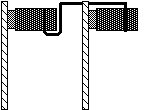
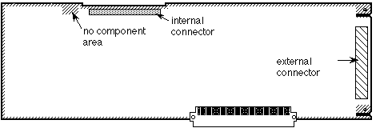

|
|
This Technical Note discusses the possible problems you might run into while
designing a NuBus(TM) card. It covers some of the specifications which, if not
followed, will have problems with current Macintosh machines, and possibly
future machines.
[Jun 01 1989]
|
Introduction
If you are making a NuBus card for the Macintosh II family of computers, then
you have to be very careful to follow the physical specifications which are
listed in the NuBus specifications (IEEE P1196). There are two areas where
some developers have run into problems. The first problem has to do with not
positioning the external connector properly. The result is that some products
have problems with the external hole on the back of the Macintosh IIcx. The
second problem has to do with developers who run ribbon cables over the top of
their boards to connect two boards. If a slot is not cut into the top of the
board to allow the ribbon cable to sit below the top of the card, then the
boards will have problems in our machines.
External Connector
The NuBus specification allows for an external connector plastics opening of
only 74.55 mm x 11.90 mm. The Macintosh II and IIx allowed a significantly
larger hole than the specification (80.00 mm x 17.00 mm) and some developers
incorrectly assumed that Apple would continue to allow for this larger size.
When the Macintosh IIcx came out, these boards were incompatible, since the
IIcx only allows for an external opening of 75.61 mm x 14.00 mm. This opening
is still larger than the IEEE specification. We could shrink this size all the
way to the limit of the NuBus specification in future machines. If you stay
within the limits which are set down in the NuBus specification, then you
should not have any problems with any of our machines.
There is one other important dimension which changed in the Macintosh IIcx;
this is the intercard spacing. In the Macintosh II and IIx, the intercard
spacing is set to the minimum space allowed by the NuBus specification (22.86
mm). In the Macintosh IIcx this dimension was expanded to 24.13 mm.
Figure 1 shows the connector opening and intercard spacing for the Macintosh
IIcx.
Figure 1 - Macintosh IIcx External Connector Opening and Intercard Spacing
Internal Connector
Several NuBus card developers have the need to connect two boards. The NuBus
specification allows for this need with an auxiliary connector at the top of
the card and next to the no component area. To connect the cards, you need to
use a ribbon cable. The cable is run over the top of the card as demonstrated
in Figure 2. The problem occurs when the ribbon cable is run over the top of a
card and is not given a slot into which to drop.

Figure 2 - Side View of Internal Connection
Figure 3 is an example of the wrong way to make your internal connector.
The ribbon cable will not fit over top of the NuBus card; you must make a slot
at the top of your card for the ribbon cable. Refer to Figure 4 for an example
of the correct way to make your internal connector.
Figure 3 - The Wrong Way
If you cut a slot at the top of your NuBus card, you will not have problems
with future Macintosh computers which utilize the NuBus standard. The slot
needs to be deep enough for the cable to be flush with the top of the card.

Figure 4 - The Correct Way
The internal connector must not have any parts which extend into the "no
component area." This means that if your connector has lock & eject tabs
(like the internal SCSI connector) then the tabs must be below the "no
component area."
The no component area is defined as the area of the card onto which you cannot
put any parts. The lid of the Macintosh II family of computers has two fingers
which hold the NuBus cards into place. These fingers are needed for stability,
and they help to ensure that the cards will not be damaged in the event that
the computer is knocked around. If there are components in the no component
area, then the fingers will either break the components, or the lid will not
sit correctly.
No Component Area
The no component area is not just an area in which you should not mount parts,
but it is also a three-dimensional area. As such, the no component area covers
the surface of the board as well as the distance to the next card (22.86 mm).
This means that you must not violate this space with either mounted parts or
daughter boards.
Full-Size NuBus Cards
It is important to test all full-size NuBus cards in the Macintosh modular
platforms (e.g., IIcx and IIci). A full-size NuBus card extends 326.6 mm and
might interfere with the NMI and reset buttons in these machines. Most cards
should not have this problem, however, developers who find this problem with
their cards should contact Developer Technical Support at the address listed in
Technical Note #0.
Conclusion
The moral of this story is that you should always follow the NuBus
specifications which deal with the physical dimensions of your cards, even if
Apple allows for more space in certain models of our machines.
If your board violates any of the NuBus specifications, or if you have run a
ribbon cable over the top of your card, then you need to seriously consider
redesigning your board.
References
NuBus--A Simple 32-Bit Backplane Bus P1196 Specification
NuBus is a trademark of Texas Instruments
Back to top
Downloadables
|

|
Acrobat version of this Note (276K)
|
Download
|
Back to top
|